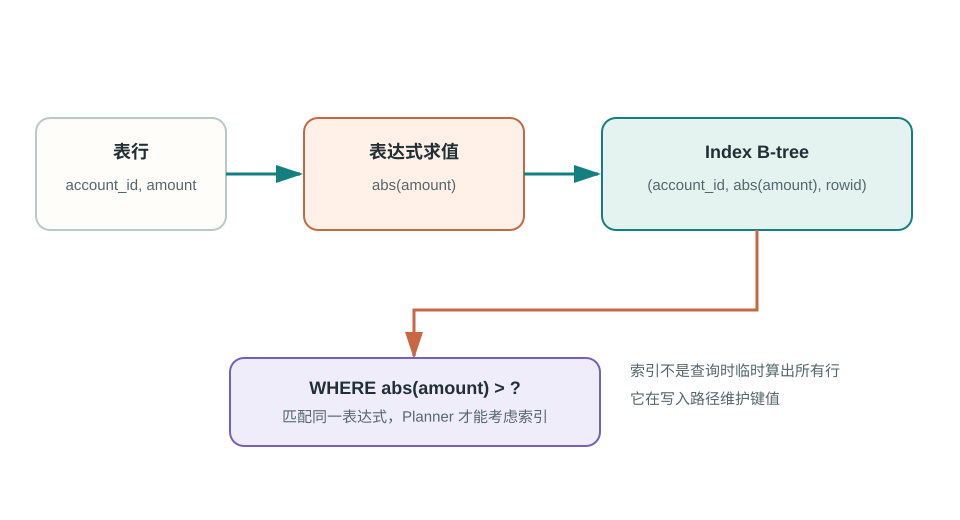
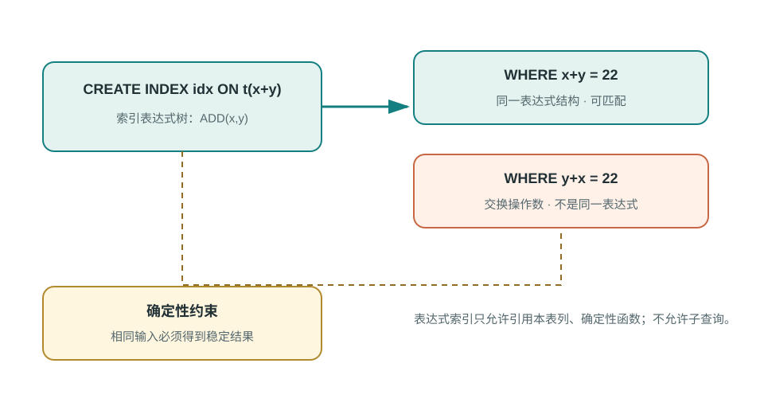
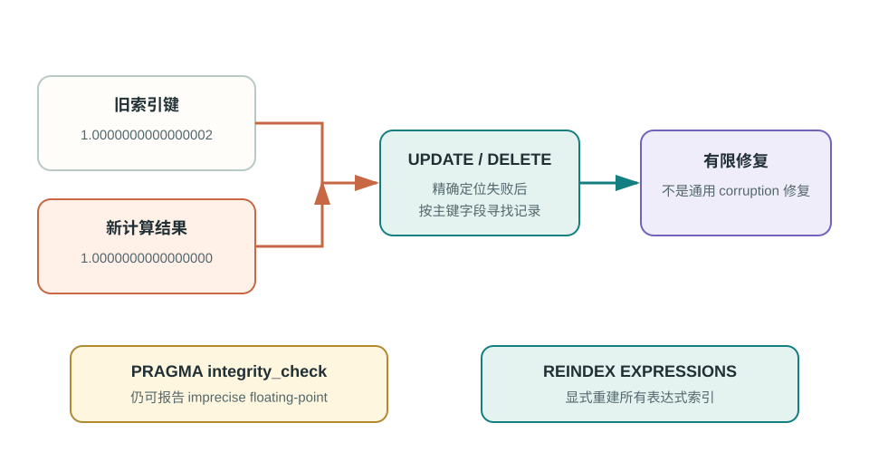

表达式索引与自修复：语法匹配、陈旧键与 REINDEX
表达式索引把计算结果写入 B-tree，但 Planner 只匹配与索引定义相同的表达式。跨平台、版本或函数实现变化可能产生 stale expression index；SQLite 3.53.0 引入了有限的自修复路径与 REINDEX EXPRESSIONS。
阅读提示：可轻点图解打开独立矢量原图；窄屏图解支持横向查看细节。
1. 为什么把计算结果建成索引？
假设账务表存储金额 amt，业务经常按账户筛选，再按金额绝对值查找或排序。普通索引只能直接按列值排序；若每次查询都先扫描大量行、计算 abs(amt) 再筛选，成本会随候选行数增长。表达式索引把表达式结果作为索引键的一部分，在 INSERT/UPDATE 时维护 B-tree，查询时就有机会直接按这个计算值定位。

例如 CREATE INDEX idx_amt ON account_change(acct_no, abs(amt))，适合查询中同时出现账户号与金额绝对值条件的场景。表达式索引仍然是普通索引的一种，不是运行时缓存，也不会自动覆盖任意数学等价表达式。
2. Planner 匹配表达式，看结构，不做代数化简
SQLite 官方文档给出了明确规则：索引表达式必须和 WHERE 或 ORDER BY 中的表达式相同，允许少量无关紧要的语法差异（例如空白），但 Planner 不会证明两个表达式在代数上等价。若索引建在 x+y 上，查询 WHERE x+y=22 可以考虑使用该索引；WHERE y+x=22 即使数学上等价，也不会匹配这个索引。

这个约束影响应用 SQL 的统一方式：ORM、查询生成器和手写 SQL 最好复用规范表达式，不要在不同路径随意改写算式。可以把复杂表达式提升为命名的 generated column，再对生成列建索引，从而减少应用端重复书写表达式。
检查计划时可以使用 EXPLAIN QUERY PLAN，但输出文本属于版本相关的诊断信息，不应写成应用的固定解析接口。应验证结果正确，并在目标 SQLite 版本和目标数据分布上观察是否使用了预期索引。资料见 Indexes On Expressions。
3. 索引表达式为什么必须确定？
索引键一旦写入数据库文件，SQLite 假设未来重新计算同一行的表达式时仍得到相同值。于是表达式只能引用当前表的列，不能包含子查询，也只能调用确定性函数。random() 不适合进入索引，因为相同输入不保证产生相同结果；应用自定义函数默认也不被视为确定性，必须在注册时显式声明 SQLITE_DETERMINISTIC 才可能用于表达式索引。
这个 flag 是应用开发者对函数语义作出的承诺，而不是 SQLite 缓存函数结果的性能开关。若函数依赖时间、外部文件、进程全局状态、可变词典或部署环境，不能仅为创建索引而把它标记为 deterministic。尤其要考虑数据库文件会被复制到另一台机器、另一种 CPU 或更新后的 SQLite / ICU 版本上。
一个实用替代方案是 STORED generated column：把表达式值存为表中的列，再在该列上建索引。这样表达式在行写入时计算并随行保存，避免了索引表达式跨环境重新求值的一部分风险；但仍需在更改生成列定义或函数语义时进行迁移与重建。
4. Stale expression index 从哪里来？
所谓 stale expression index，不是普通的“索引统计信息过期”，而是索引中存储的表达式键与当前 SQLite 重新计算的结果不完全相同。它可能出现在浮点表达式中：系统数学库、CPU 架构、操作系统、SQLite 版本或应用自定义函数发生变化时，某些计算结果可能只相差一个或两个 ULP。被标记为 deterministic 并不意味着每个跨平台浮点实现都能逐位相同。
官方文档列出的风险包括 transcendental math 函数、ICU 升级后大小写转换变化、SQLite 文本到浮点转换实现变化、应用自定义函数升级，以及旧的 PRAGMA case_sensitive_like 用法。一个 stale 索引在常规搜索中可能很少造成可见问题，但当 UPDATE/DELETE 需要删除旧键，或 PRAGMA integrity_check 对照表行与索引键时，就可能暴露出来。
因此，版本迁移不是只看数据库文件格式是否兼容：如果 schema 使用表达式索引，还要盘点其函数依赖、平台与版本边界。不要把 stale index 和所有 B-tree corruption 混为一谈。
5. SQLite 3.53.0 的自修复到底修复什么？
从 SQLite 3.53.0（2026-04-09）开始，在 UPDATE 或 DELETE 需要处理 stale expression index 条目时，SQLite 会在某些情况下尝试找到真正对应的索引记录并继续，而不是像旧版本那样直接因找不到精确键值而报错。官方称之为 self-healing expression indexes，但它是一个范围有限的写路径修复，不是通用数据库修复器，也不是查询时自动重建所有索引。

在 3.54.1 源码中，VDBE 的 OP_IdxDelete 在无法精确命中索引键时会进入查找辅助路径；sqlite3VdbeFindIndexKey() 识别表达式索引/虚拟列索引，并用主键字段帮助找到对应记录。该实现先搜索游标附近的有限范围，必要时再扩大到整个索引。这个内部算法是版本化实现细节，不是公开 C API。
需要纠正一种常见误读：这不是给每个 Index 增加一个通用“自修复版本戳”，也不是任何坏索引都能自动恢复。PRAGMA integrity_check 仍可能报告 index NAME stores an imprecise floating-point value for row N。上游测试 test/expridx1.test 使用 test-only imposter-table 技术合成陈旧键；它不是应用可调用的普通 SQL 修复接口。
6. REINDEX EXPRESSIONS：显式重建，而不是等待自修复
SQLite 3.53.0 新增 REINDEX EXPRESSIONS;，用于重建所有表达式索引并保留普通索引不动。它适合函数实现或平台环境变化后，对表达式索引做有计划的刷新。它不是一个按任意表名过滤的专用语法；若只需重建某个索引，可使用普通 REINDEX index_name;。
-- 普通表达式索引
CREATE INDEX idx_amount
ON account_change(acct_no, abs(amt));
-- 检查索引健康状态
PRAGMA integrity_check;
-- SQLite 3.53.0 及之后版本
REINDEX EXPRESSIONS;仓库的 examples/22_expression_index.sql 演示表达式匹配与索引创建；examples/22_reindex_expressions.sql 是 3.53.0+ 的可选维护语句。CI 会按运行时版本进行能力检测，不会把旧版 SQLite 不认识该语法误判为表达式索引本身失败。
自测：3.53.0 以后还需要 REINDEX EXPRESSIONS 吗？
需要。自动修复只在某些 UPDATE/DELETE 路径中帮助定位陈旧键；它不会把所有旧索引立即全量重建，也不会让 integrity_check 不再报告陈旧浮点值。
官方资料与版本边界
涉及源码内部符号时，以 SQLite 3.54.1 源码快照为定位基准；公开文档用于解释稳定接口和语义。内部函数、行号和构建配置会随版本变化。
- Indexes On Expressions · SQLite 官方文档或版本化源码
- Stale Expression Indexes · SQLite 官方文档或版本化源码
- SQLite 3.53.0 Release Notes · SQLite 官方文档或版本化源码
- SQLite 3.54.1 VDBE source · SQLite 官方文档或版本化源码
- SQLite 3.54.1 expression-index test · SQLite 官方文档或版本化源码